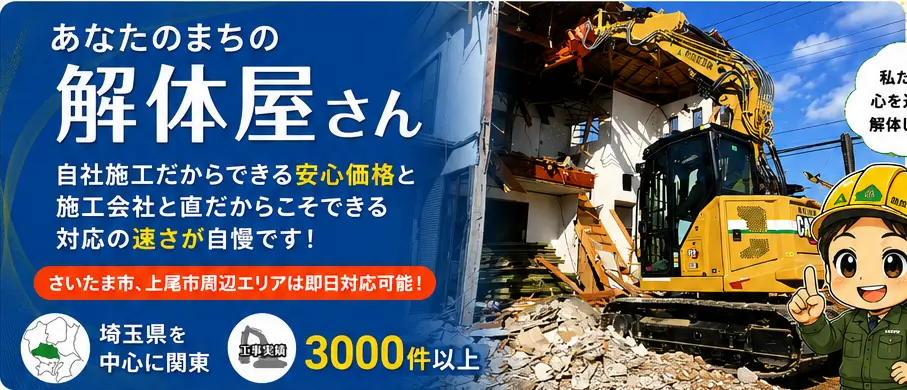
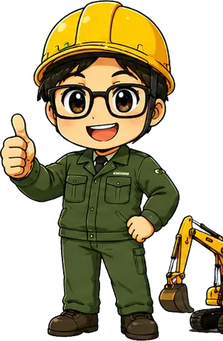
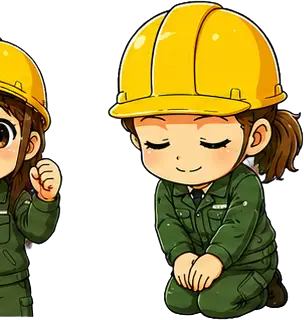
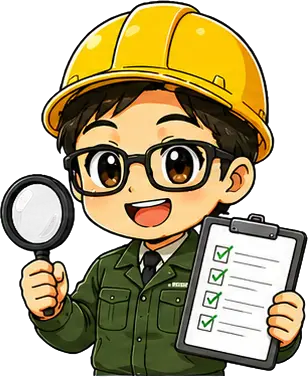
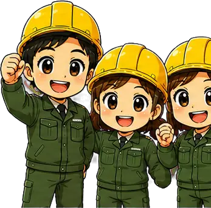

自社施工で
安心価格







工事実績3,000件以上豊富な経験と確かな技術
埼玉県を中心に関東エリア対応地域密着で迅速に対応
地域密着で
選ばれています！

戸建住宅・空き家など、周辺環境へ配慮しながら丁寧に解体します。
倉庫・店舗・工場などの鉄骨造建物に対応します。
確かな施工管理で、鉄筋コンクリート造の解体に対応します。
原状回復・スケルトン工事まで、ご要望に合わせて施工します。
塀・庭石・カーポートなど、建物まわりの撤去もお任せください。
管理が難しい空き家のご相談から、解体・整地まで一貫対応します。
はじめての方でも安心の7ステップ！
 お問い合わせ
お問い合わせ
現地調査 お見積り
お見積り ご契約近隣挨拶完工・お引渡し
ご契約近隣挨拶完工・お引渡し工期｜10日間 地域｜さいたま市
近隣への配慮までしっかりしてくれて、とても安心できました！
工期｜15日間 地域｜上尾市
見積りがわかりやすく、追加費用もなく安心でした！

解体工事のことなら、お気軽にご相談ください！